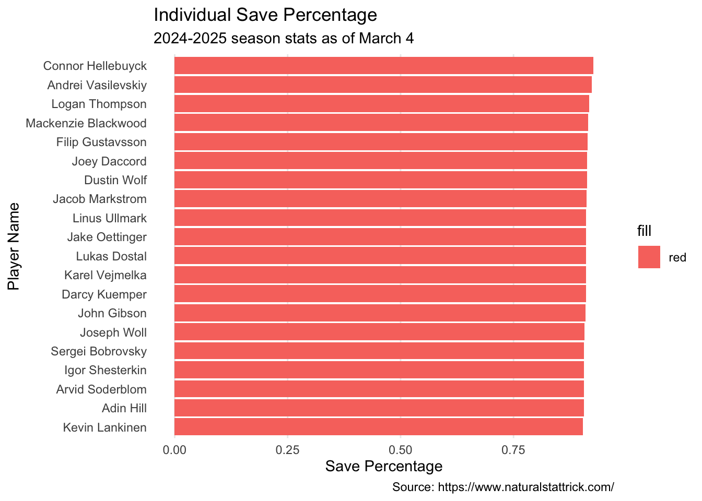
Vezina Trophy
Percentage of shots against that were saves (SV%)
Top 5:
1. Hellebuyck
2. Vasilevskiy
3. Thompson
4. Blackwood
5. Gustavsson
Goals Saved Above Average (GSAA)
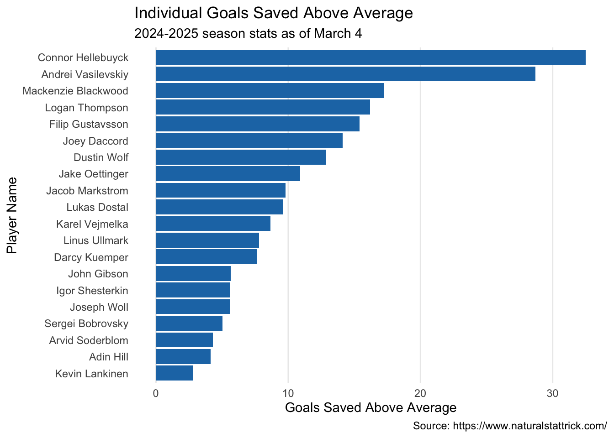
Top 5:
1. Hellebuyck
2. Vasilevskiy
3. Blackwood
4. Thompson
5. Gustavsson
High Danger Goals Saves Above Average
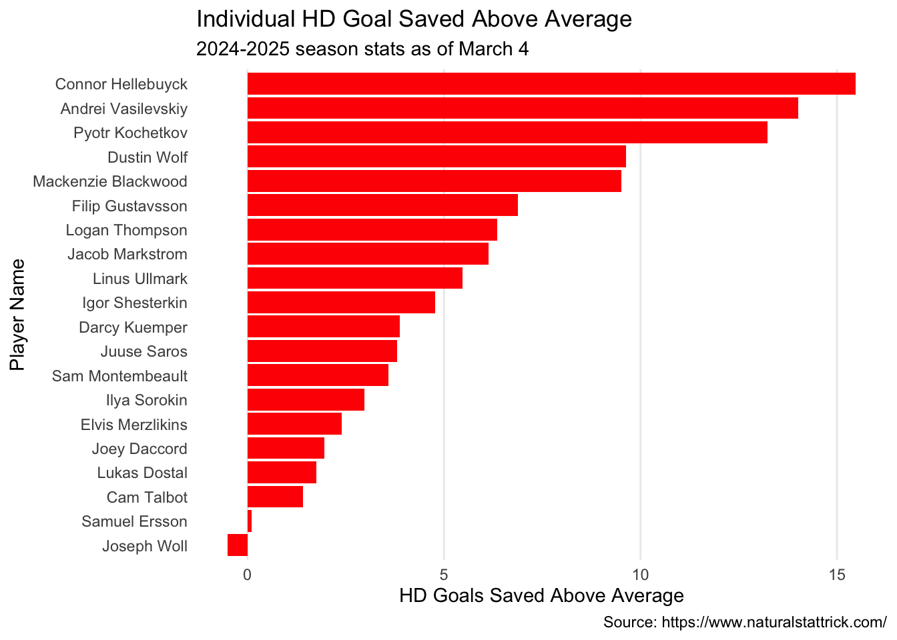
Top 5:
1. Hellebuyck
2. Vasilevskiy
3. Kochetkov
4. Wolf
5. Blackwood
Lastly to look at them all together and compair
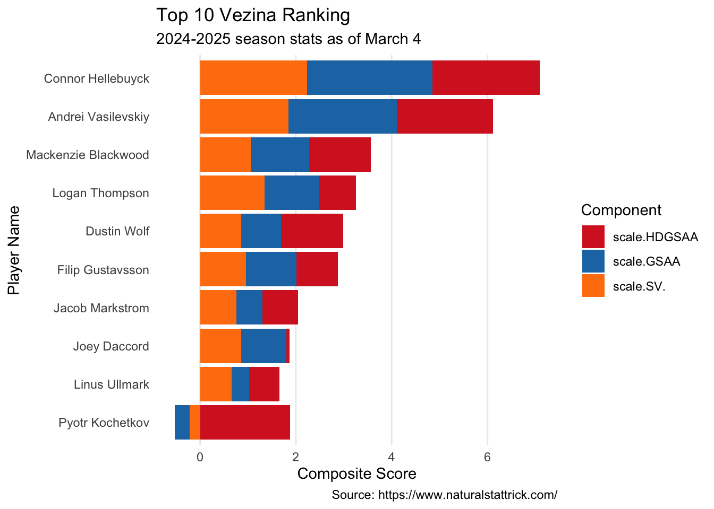
My Final Ballot for the Vezina Award is …
1.Connor Hellebuyck
2. Andrei Vasilevskiy
3. Makenzie Blackwood
4. Logan Thompson
5. Filip Gustavsson
I did choose Gustavsson over Wolf. Gustavsson beats wolf in SV% and GSAA. While Wolf has higher HDGSAA, I think SV and GSAA are more important and Wolf was ranked 7th in both of those.
Hart Memorial Trophy
Expected Goals Percentage
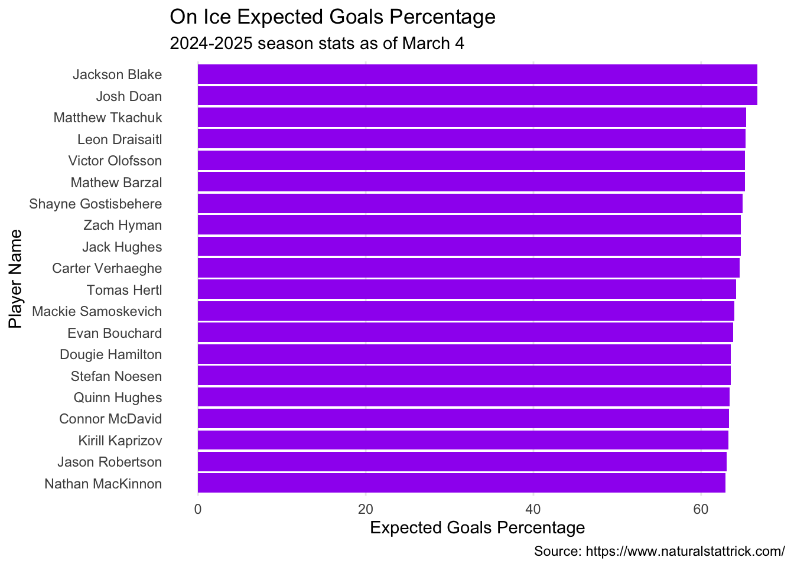
Top 5:
1. Jackson Blake
2. Josh Doan
3. Matthew Tkachuk
4. Leon Draisaitl
5. Victor Olofsson
Percentage of total Corsi
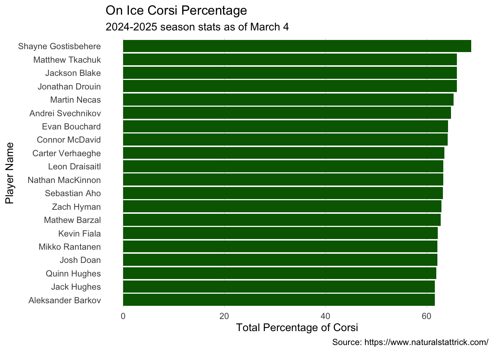
Top 5:
1. Shayne Godtisbehertr
2. Matthew Tkachuk
3. Jackson Blake
4. Jonathan Drouin
5. Martin Necas
Final Ballot for the Hart Memorial is….
1. Jackson Black
2. Matthew Tkachuk
3. Shayne Godtisbehertr
4. Leon Draisaitl
5. Josh Doan
Frank J. Selke Trophy
Total Penalties
In my mind the bewst defensive player should be the most agresive and therefore have the most penalties
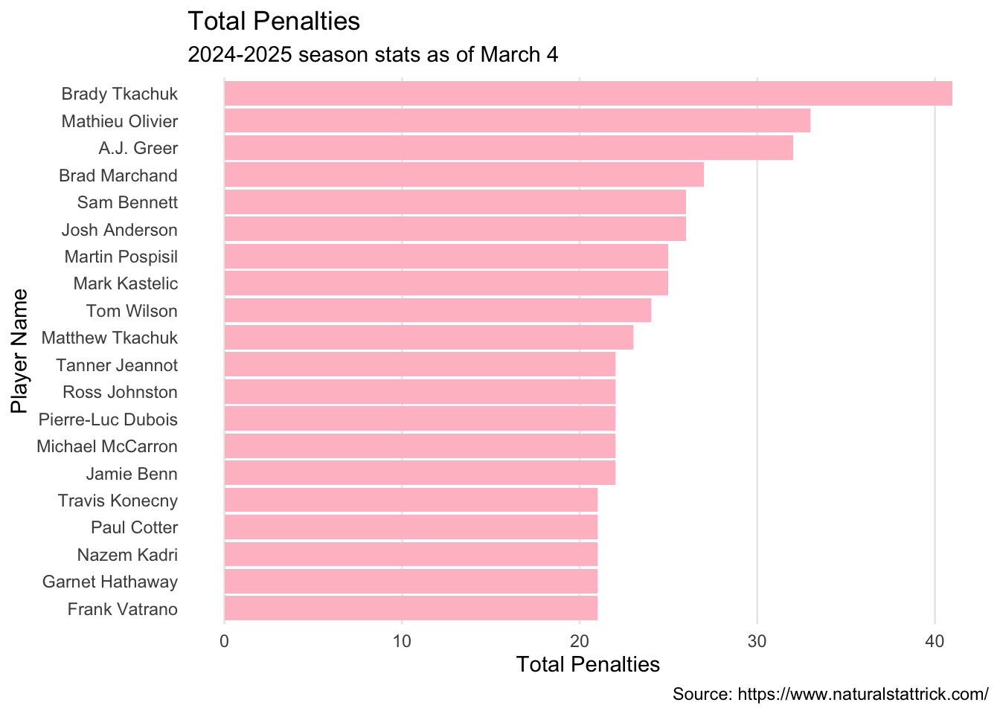
Top 5: for penalties
1. Brady Tkachuk
2. Mathiew Oliver
3. A.J. Green
4. Brad Machand
5. Sam Bennett
Penalties Drawn
The best defensive player should also make people the most made and there get the most penalties commited against them.
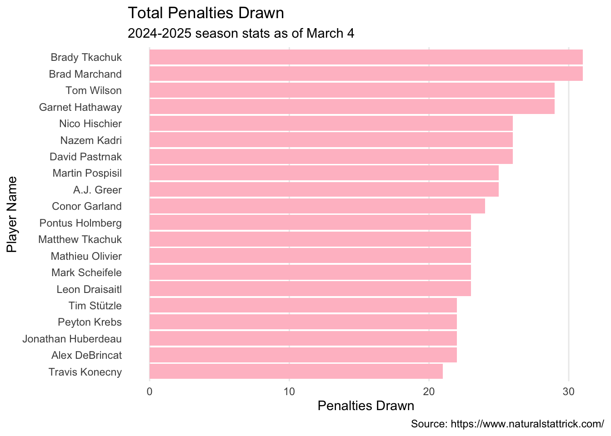
Top 5 Penalties Drawn
1. Brady Tkachuk
2. Tom Wilson
3. Garret Hathaway
4. Nico Hischier
5. Nazem Kadri
##Giveaway vs. Takeaway ### to short them I am going to use Takeaway stat
Player Takeaways
1 Nazem Kadri 22
2 Sam Bennett 22
3 Nico Hischier 19
4 Tom Wilson 16
5 Brady Tkachuk 15My Ballet is__
1. Nazem Kadri
2. Sam Bennett
3. Nico Hischier
4. Tom Wilson
5. Brady Tkachuk
James Norris Memorial Trophy
Shots blocked
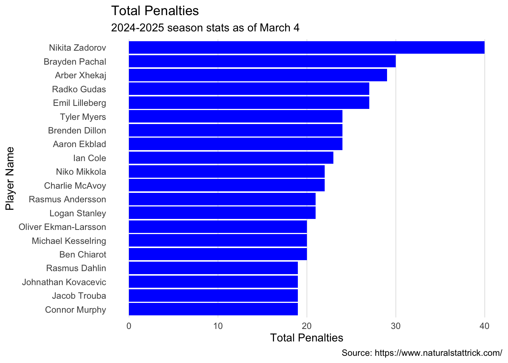
Top 5
Total Penalties
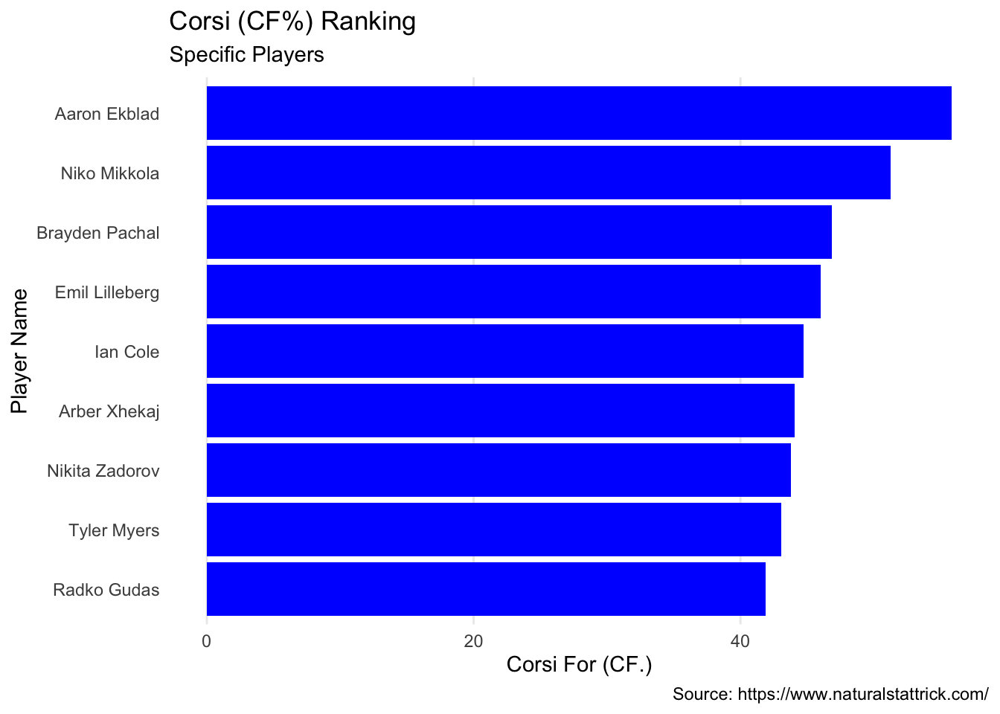
Top 5 from above ranked on CF%
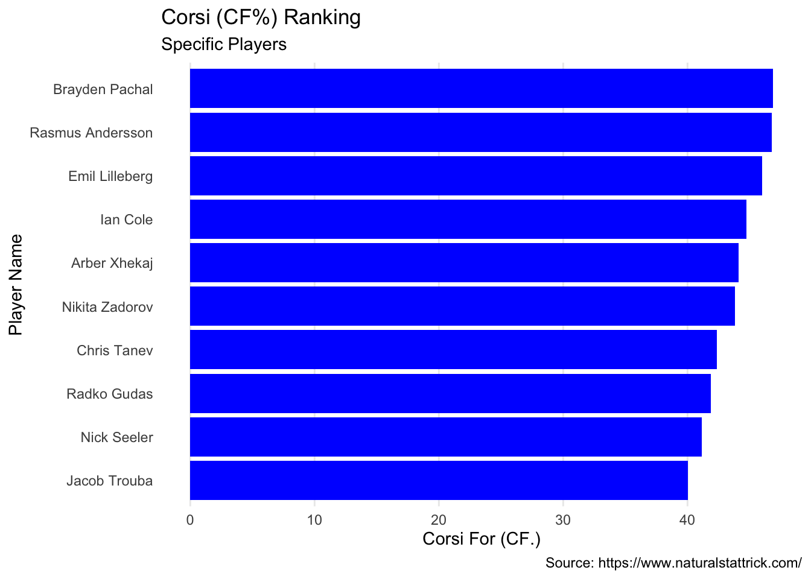